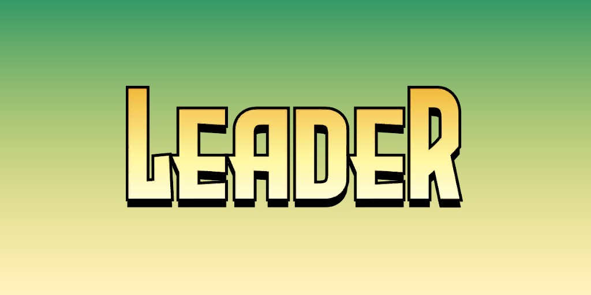
Le Leader (Samuel Sterns) (Terre-616)
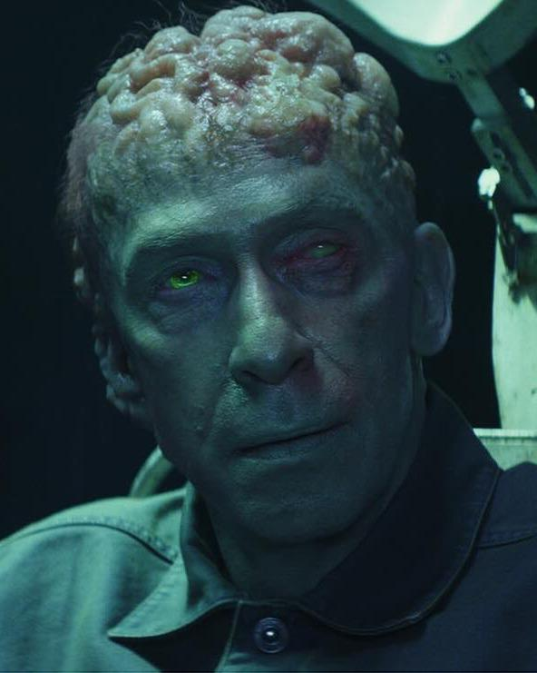
Origines :
Samuel Sterns était un ouvrier travaillant dans une usine chimique à Boise, dans l'Idaho.
De nature timide et effacée, il menait une vie moderne, loin des grandes ambitions scientifiques qu'il nourrissait en secret.
Un jour, Sterns fut victime d'un accident industriel lorsqu'un récipient contenant des déchets radioactifs explosa à proximité de lui.
Il fut exposé à une dose massive de radiations gamma, similaires à celles qui avaient transformé Bruce Banner en Hulk, et fut lui aussi profondément altéré.
Contrairement à Bruce Banner, dont la mutation s'était traduite par une transformation physique incontrôlable, les radiations eurent un effet radicalement différent sur Sterns : elles stimulèrent de manière exponentielle ses capacités intellectuelles.
Son cerveau muta et connut une croissance continue, augmentant sa masse crânienne et lui conférant une intelligence largement supérieure à n'importe quel être humain.
Il prit le nom du Leader, et développa rapidement une obsession pour Hulk, qu'il considérait à la fois comme une réponse scientifique à ses problèmes, et comme un rival.
Convaincu de sa supériorité intellectuelle, il entreprit de manipuler les événements dans l'ombre afin de prouver sa domination.
Grâce à son génie, il mit au point de nombreuses technologies avancées, créa des armées de serviteurs, notamment les Humanoïdes, et affronta Hulk à de multiples reprises, cherchant à exploiter son pouvoir Gamma à ses propres fins.
Cependant, malgré son intelligence exceptionnelle, le Leader fut souvent vaincu par Hulk, dont la force brute surpassait ses plans complexes.
Ces échecs répétés renforcèrent son obsession et sa volonté de domination.
Au fil du temps, Sterns ne cessa d'évoluer, son cerveau poursuivant sa croissance, accentuant à la fois son génie et sa folie.
Il devint l'un des ennemis les plus redoutables de Hulk, incarnant l'opposition entre intelligence froide et puissance incontrôlable.
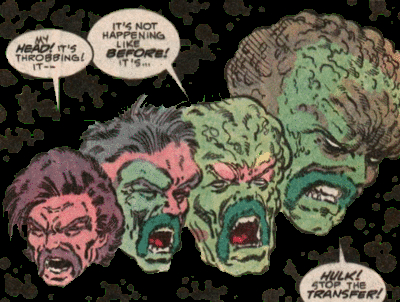
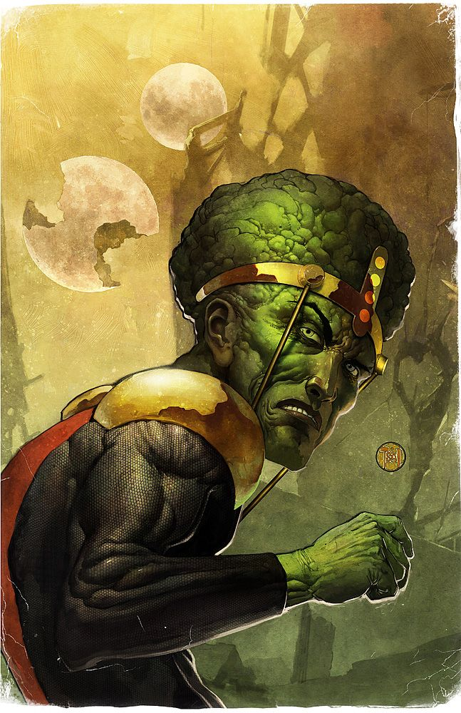
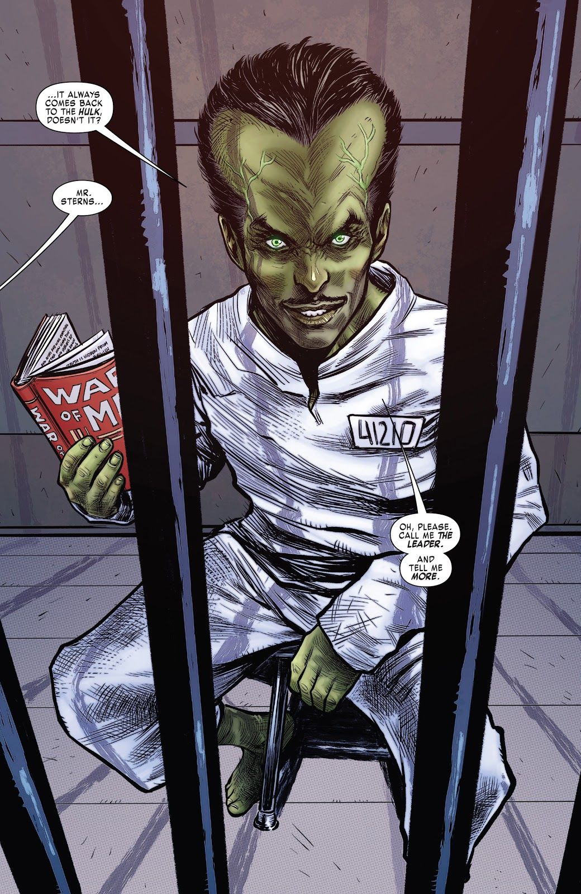
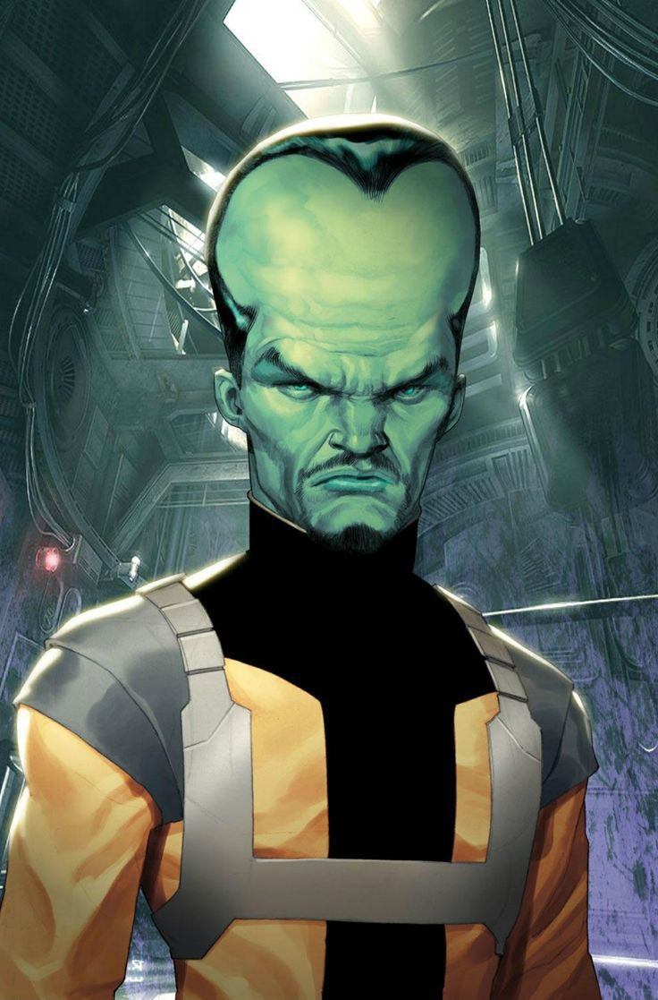
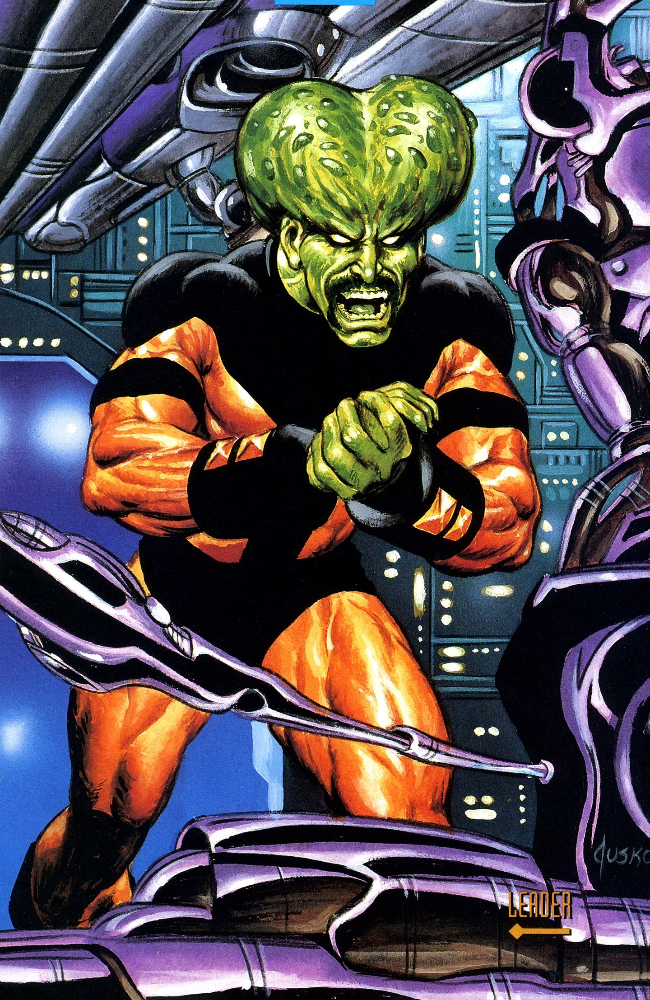
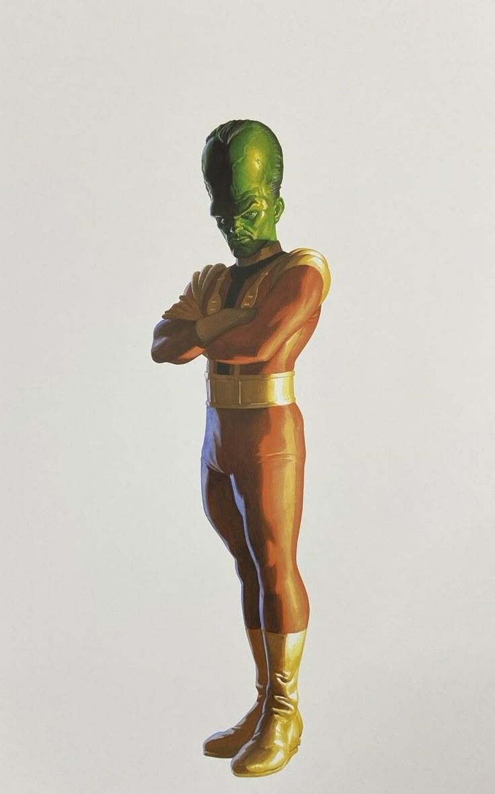
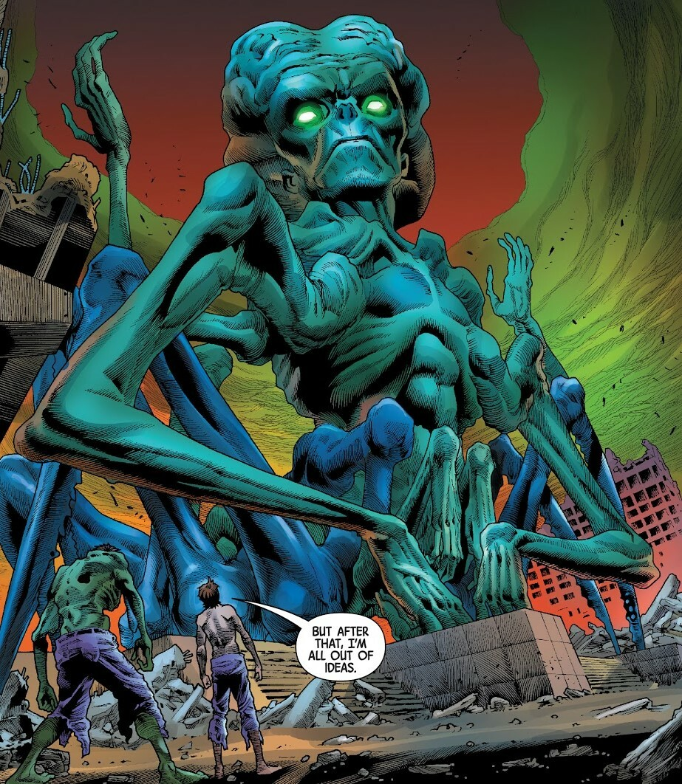
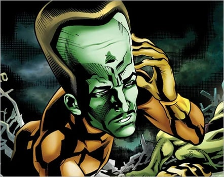
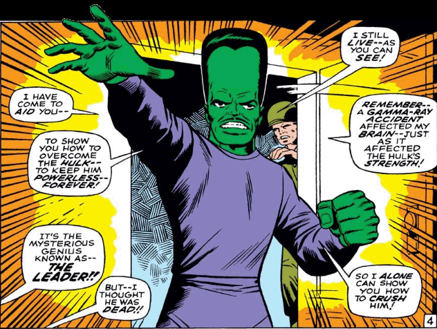
Capacités :
Après avoir été exposé à une explosion de déchets irradiés aux rayons gamma, Samuel Sterns se vit doté d'une capacité mentale surhumaine et d'une intuition extrêmement fine.
Profitant de ces capacités, il a acquis d'immenses connaissances dans les domaines de la génétique, de la physique et de la robotique.
Son savoir lui a permis de concevoir une vaste gamme d'armes, de véhicules, d'ordinateurs, d'androïdes ou d'humanoïdes synthétiques très sophistiqués.
Son cerveau amélioré lui confère une capacité à résoudre les problèmes, et retenir une information en mémoire et à y accéder, comme un coffre-fort.
Il se souvient de tous les instants qu'il a vécu depuis l'accident qui lui a conféré ses pouvoirs.
Ses capacités de réflexion lui permettent de prédire l'issue probable de n'importe quel événement stratégique ou tactiques, et sont si poussées qu'elles pourraient s'apparenter à de la divination.
En complément des ses capacités cérébrales, il possède des capacités télékinésiques réduites mais efficaces, ainsi que des pouvoirs télépathiques.
Il peut notamment, après un simple toucher, exercer un contrôle mentale sur les individus mutés aux rayons gamma.

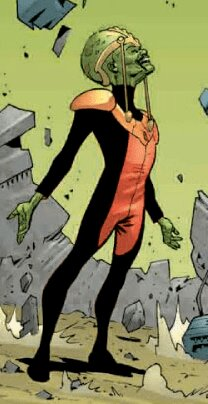
Apparence :
Le Leader est un être humanoïde à l'apparence profondément altérée par les rayons gamma.
Sa caractéristique la plus marquante est la taille anormalement grande de son crâne, dont la partie supérieure s'est développée de manière disproportionnée pour contenir son cerveau surdéveloppé.
Comme la plupart des créatures gamma, sa peau est verte.
Il est souvent représenté vêtu d'un costume simple, parfois accompagné d'une cape ou d'une tenue de scientifique.